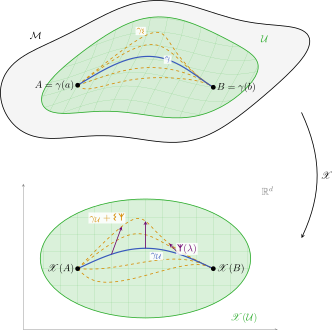

7.2 Length and Geodesics
Chapter 7 • Metric
7.2 Length and Geodesics
Let \(\gamma : \mathbb{R} \to \mathcal{M}\) be a curve, at least \(C^1\), with velocity \(v_\gamma : \lambda \mapsto v_{\gamma(\lambda)}\), on a metric manifold \((\mathcal{M}, \mathcal{O}, \mathcal{A}, g)\). The sign and the speed of \(\gamma\) are the functions \begin{align*} \textrm{\runic ᛇ}_\gamma : \mathbb{R} &\longrightarrow \{-1, 0, +1\} & s_\gamma : \mathbb{R} &\longrightarrow \mathbb{R} \\ \lambda &\longmapsto \textrm{\runic ᛇ}_\gamma(\lambda) \, \coloneq \operatorname{sgn}\left( g_{\gamma(\lambda)}\big( v_{\gamma(\lambda)}, v_{\gamma(\lambda)} \big)\right), & \lambda &\longmapsto \sqrt{ \textrm{\runic ᛇ}_\gamma(\lambda) \, g_{\gamma(\lambda)}\big( v_{\gamma(\lambda)}, v_{\gamma(\lambda)} \big) } , \end{align*} i.e. \(s_\gamma = \sqrt{ \textrm{\runic ᛇ}_\gamma \, g_{ij} \, \dot{\gamma}^i_\mathcal{U} \, \dot{\gamma}^j_\mathcal{U} }\) in a chart. For a Riemannian metric, \(\textrm{\runic ᛇ}_\gamma = +1\) wherever \(v_\gamma \neq 0\). For an indefinite one, \(\textrm{\runic ᛇ}_\gamma = 0\) also for \(v_\gamma \neq 0\) (null velocities), and \(s_\gamma\) is defined piecewise on intervals where \(\textrm{\runic ᛇ}_\gamma\) is constant.
The length of \(\gamma\) between the parameter values \(a < b\) is the functional \begin{align*} L_{[a,b]} : \{ \gamma : \mathbb{R} \to \mathcal{M} \mid \gamma \text{ is } C^1 \} &\longrightarrow \mathbb{R} \\ \gamma &\longmapsto L_{[a,b]}[\gamma] \coloneqq \int_a^b s_\gamma(\lambda) \, d\lambda , \end{align*} This satisfies that \(L_{\textrm{\runic ᚱ}^{-1}([a,b])}[\gamma \circ \textrm{\runic ᚱ}] = L_{[a,b]}[\gamma]\) for every diffeomorphism \(\textrm{\runic ᚱ} : \mathbb{R} \to \mathbb{R}\) (Appendix B.13).
7.2.1 Variations and the Euler–Lagrange Equations
Let \(\gamma : \mathbb{R} \to \mathcal{M}\) be smooth with \(\textrm{\runic ᛇ}_\gamma(\lambda) \neq 0\) for all \(\lambda \in [a,b]\). Since \(\lambda \mapsto g_{\gamma(\lambda)}\big( v_{\gamma(\lambda)}, v_{\gamma(\lambda)} \big)\) is continuous and does not vanish on \([a,b]\), \(\textrm{\runic ᛇ}_\gamma\) is a constant \(\pm 1\) there. Let \((\mathcal{U}, \mathscr{X})\) be a chart with \(\gamma([a,b]) \subseteq \mathcal{U}\)5, and denote by \(\gamma_\mathcal{U} \coloneqq \mathscr{X} \circ \gamma : [a,b] \to \mathbb{R}^d\) its chart representative. A variation of \(\gamma\) with fixed endpoints w.r.t. the chart \((\mathcal{U}, \mathscr{X})\) is a family of curves labelled by a real deformation parameter \(\textrm{\runic ᛊ} \in (-\textrm{\runic ᛊ}_0, \textrm{\runic ᛊ}_0)\), independent of the curve parameter \(\lambda\): \begin{align*} \gamma_{\textrm{\runic ᛊ}} : [a,b] &\longrightarrow \mathcal{U} \\ \lambda &\longmapsto \gamma_{\textrm{\runic ᛊ}}(\lambda) \coloneqq \mathscr{X}^{-1}\big( \gamma_\mathcal{U}(\lambda) + \textrm{\runic ᛊ} \, \textrm{\runic ᛉ}(\lambda) \big), \end{align*} where \(\textrm{\runic ᛉ} : [a,b] \to \mathbb{R}^d\) is smooth with \(\textrm{\runic ᛉ}(a) = \textrm{\runic ᛉ}(b) = 0\), and \(\textrm{\runic ᛊ}_0 > 0\) is small enough for \(\gamma_\mathcal{U} + \textrm{\runic ᛊ} \, \textrm{\runic ᛉ}\) to stay in \(\mathscr{X}(\mathcal{U})\). The deformation is defined through the chart: it is the chart representative that is shifted linearly in \(\textrm{\runic ᛊ}\), \(\mathscr{X} \circ \gamma_{\textrm{\runic ᛊ}} = \gamma_\mathcal{U} + \textrm{\runic ᛊ} \, \textrm{\runic ᛉ}\), whereas in another chart \((\mathcal{V}, \mathscr{Y})\), \(\mathscr{Y} \circ \gamma_{\textrm{\runic ᛊ}}\) is in general not of this form. Thus \(\gamma_{\textrm{\runic ᛊ} = 0} = \gamma\), \(\gamma_{\textrm{\runic ᛊ}}(a) = \gamma(a)\), \(\gamma_{\textrm{\runic ᛊ}}(b) = \gamma(b)\) The curve \(\gamma\) is a geodesic if \[ \frac{d}{d\textrm{\runic ᛊ}} L_{[a,b]}[\gamma_{\textrm{\runic ᛊ}}] \Big|_{\textrm{\runic ᛊ}=0} = 0 \qquad \text{for every such } \textrm{\runic ᛉ} . \] The requirement \(\textrm{\runic ᛇ}_\gamma \neq 0\) makes \(s_\gamma = \sqrt{\textrm{\runic ᛇ}_\gamma \, g(v_\gamma, v_\gamma)}\) differentiable. For a Riemannian metric it only excludes \(v_\gamma = 0\). For an indefinite one it also excludes null velocities. Whether \(\gamma\) is a geodesic does not depend on the chart used to deform it: the resulting condition (see below), holds in every chart.

Figure 7.1: Variation of a curve with fixed endpoints, as used in the variational definition of geodesics (Chapter 7). Top: the curve \(\gamma\) (blue) joins the points \(A = \gamma(a)\) and \(B = \gamma(b)\) of the manifold \(\mathcal{M}\) inside the chart domain \(\mathcal{U}\) (green), on which the images of the coordinate lines of \(\mathscr{X}\) are drawn. The dashed orange curves are members \(\gamma_{\textrm{\runic ᛊ}}\) of a variation, for a few values of the deformation parameter \(\textrm{\runic ᛊ}\); all of them share the endpoints \(A\) and \(B\). Bottom: the same objects seen through the chart \((\mathcal{U}, \mathscr{X})\), where the coordinate lines become straight. Here the variation is defined: each member is the chart representative \(\gamma_\mathcal{U}\) shifted linearly in the deformation parameter, \(\mathscr{X} \circ \gamma_{\textrm{\runic ᛊ}} = \gamma_\mathcal{U} + \textrm{\runic ᛊ} \, \textrm{\runic ᛉ}\), along the vectors \(\textrm{\runic ᛉ}(\lambda) \in \mathbb{R}^d\) (purple, drawn for \(\textrm{\runic ᛊ} = 1\)), which vanish at the endpoints, \(\textrm{\runic ᛉ}(a) = \textrm{\runic ᛉ}(b) = 0\). On the manifold the same family is no longer a linear shift: the deformation only has this simple form in the chart used to define it. The curve \(\gamma\) is a geodesic if \(\textrm{\runic ᛊ} \mapsto L_{[a,b]}[\gamma_{\textrm{\runic ᛊ}}]\) has vanishing derivative at \(\textrm{\runic ᛊ} = 0\) for every such \(\textrm{\runic ᛉ}\). On \([a,b]\), the curve \(\gamma\) and all its variations \(\gamma_{\textrm{\runic ᛊ}}\) share the same constant sign \(\textrm{\runic ᛇ}_\gamma\). Their speeds are therefore the values, on their velocities, of a single function on the tangent bundle, the Lagrangian6: \begin{align*} \mathcal{L} : \big\{ \mathcal{X}_p \in T\mathcal{M} \;\big|\; \textrm{\runic ᛇ}_\gamma \, g_p(\mathcal{X}_p, \mathcal{X}_p) > 0 \big\} &\longrightarrow \mathbb{R} \\ \mathcal{X}_p &\longmapsto \mathcal{L}(\mathcal{X}_p) \coloneqq \sqrt{ \textrm{\runic ᛇ}_\gamma \, g_p(\mathcal{X}_p, \mathcal{X}_p) } , \end{align*} \[ s_{\gamma_{\textrm{\runic ᛊ}}}(\lambda) = \mathcal{L}\big( v_{\gamma_{\textrm{\runic ᛊ}}, \gamma_{\textrm{\runic ᛊ}}(\lambda)} \big), \qquad L_{[a,b]}[\gamma_{\textrm{\runic ᛊ}}] = \int_a^b \mathcal{L}\big( v_{\gamma_{\textrm{\runic ᛊ}}, \gamma_{\textrm{\runic ᛊ}}(\lambda)} \big) \, d\lambda . \] In the bundle chart \((T\mathcal{U}, \xi_\mathscr{X})\) of Section 5.1, a vector \(\mathcal{X}_p = x^k_p \, (\partial x_k)_p\) is described by the \(2d\) numbers \(\xi_\mathscr{X}(\mathcal{X}_p) = \big( \mathscr{X}(p) \, ; \, x_p \big)\), i.e. the coordinates \(\mathscr{X}(p) = \big( \mathscr{X}^1(p), \dots, \mathscr{X}^d(p) \big)\) of its base point and its components \(x_p = (x^1_p, \dots, x^d_p)\). Since \(g_p(\mathcal{X}_p, \mathcal{X}_p) = g_{ij}(p) \, x^i_p x^j_p\), the chart representative of \(\mathcal{L}\) w.r.t. \((\mathcal{U}, \mathscr{X})\) is \[ \mathcal{L}_\mathscr{X} \coloneqq \mathcal{L} \circ \xi_\mathscr{X}^{-1} : \big( \mathscr{X}(p) \, ; \, x_p \big) \longmapsto \sqrt{ \textrm{\runic ᛇ}_\gamma \, g_{ij}(p) \, x^i_p \, x^j_p } , \] a function of \(2d\) real variables: \(d\) position slots and \(d\) velocity slots. For the velocity of \(\gamma_{\textrm{\runic ᛊ}}\), \[ \xi_\mathscr{X}\big( v_{\gamma_{\textrm{\runic ᛊ}}, \gamma_{\textrm{\runic ᛊ}}(\lambda)} \big) = \big( \gamma_\mathcal{U}(\lambda) + \textrm{\runic ᛊ} \, \textrm{\runic ᛉ}(\lambda) \, ; \, \dot{\gamma}_\mathcal{U}(\lambda) + \textrm{\runic ᛊ} \, \textrm{\runic ᛉ}'(\lambda) \big), \] \[ L_{[a,b]}[\gamma_{\textrm{\runic ᛊ}}] = \int_a^b \mathcal{L}_\mathscr{X}\big( \gamma_\mathcal{U} + \textrm{\runic ᛊ} \, \textrm{\runic ᛉ} \, ; \, \dot{\gamma}_\mathcal{U} + \textrm{\runic ᛊ} \, \textrm{\runic ᛉ}' \big) \, d\lambda , \] and at \(\textrm{\runic ᛊ} = 0\), \(\mathcal{L}_\mathscr{X}\big( \gamma_\mathcal{U}(\lambda) ; \dot{\gamma}_\mathcal{U}(\lambda) \big) = \sqrt{ \textrm{\runic ᛇ}_\gamma \, g_{ij}\big( \gamma(\lambda) \big) \, \dot{\gamma}^i_\mathcal{U}(\lambda) \, \dot{\gamma}^j_\mathcal{U}(\lambda) } = s_\gamma(\lambda)\). By Appendix B.14, \(\gamma\) is a geodesic if and only if, on \([a,b]\), the Euler–Lagrange equations hold: \[ \frac{d}{d\lambda} \Big[ (\partial_{d+m} \mathcal{L}_\mathscr{X})(\gamma_\mathcal{U} ; \dot{\gamma}_\mathcal{U}) \Big] - (\partial_m \mathcal{L}_\mathscr{X})(\gamma_\mathcal{U} ; \dot{\gamma}_\mathcal{U}) = 0 , \qquad m = 1, \dots, d , \] where \(\partial_m\) and \(\partial_{d+m}\) differentiate \(\mathcal{L}_\mathscr{X}\) w.r.t. its \(m\)-th position slot and its \(m\)-th velocity.
For the Lagrangian \(\mathcal{L}_\mathscr{X}\) of the metric, the Euler–Lagrange equations become a system of \(d\) second-order ordinary differential equations for the chart representative \(\gamma_\mathcal{U}\). Writing \(\partial_m g_{ij} \coloneqq \partial x_m \left\lfloor g_{ij} \right\rceil \in C^\infty(\mathcal{U})\), i.e. \((\partial_m g_{ij})(p) = \partial_m \left[ g_{ij} \circ \mathscr{X}^{-1} \right]\big( \mathscr{X}(p) \big)\), a curve with constant speed is a geodesic if and only if, on \([a,b]\), \begin{equation} \boxed{ \ddot{\gamma}^k_\mathcal{U}(\lambda) + \frac{1}{2} \Big( (g^{-1})^{km} \big( \partial_i g_{mj} + \partial_j g_{mi} - \partial_m g_{ij} \big) \Big)\big( \gamma(\lambda) \big) \, \dot{\gamma}^i_\mathcal{U}(\lambda) \, \dot{\gamma}^j_\mathcal{U}(\lambda) = 0 } \tag{7.1} \end{equation} and every geodesic admits a constant-speed parametrization. This is the geodesic equation in the chart \((\mathcal{U}, \mathscr{X})\). The step-by-step derivation is given in Appendix B.16.
For the resulting equations this is no restriction: \([a,b]\) is compact, so it splits into finitely many subintervals, each mapped by \(\gamma\) into a single chart domain, and a variation supported in one of them is a variation of the whole curve.
\(\mathcal{L}\) is not a covector field: on each \(T_p\mathcal{M}\) it is not linear. Functions on the tangent bundle, \(T\mathcal{M} \to \mathbb{R}\), depending on both the point and the velocity, are called Lagrangians, and the functionals \(\gamma \mapsto \int \mathcal{L}\big( v_{\gamma(\lambda)} \big) \, d\lambda\) they induce on curves are called action functionals; \(L_{[a,b]}\) is the one of this \(\mathcal{L}\).